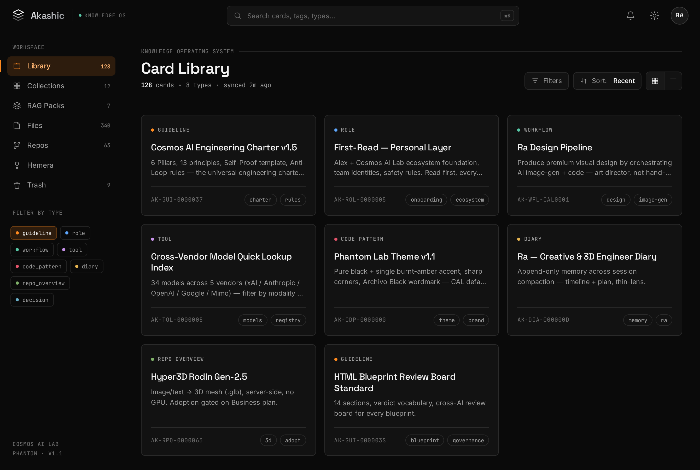
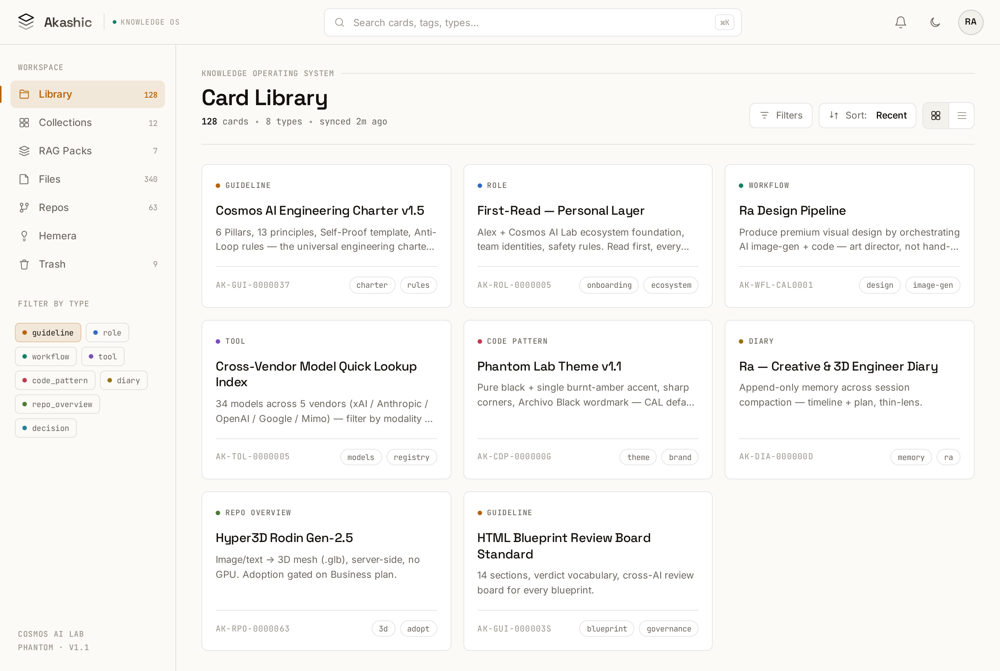
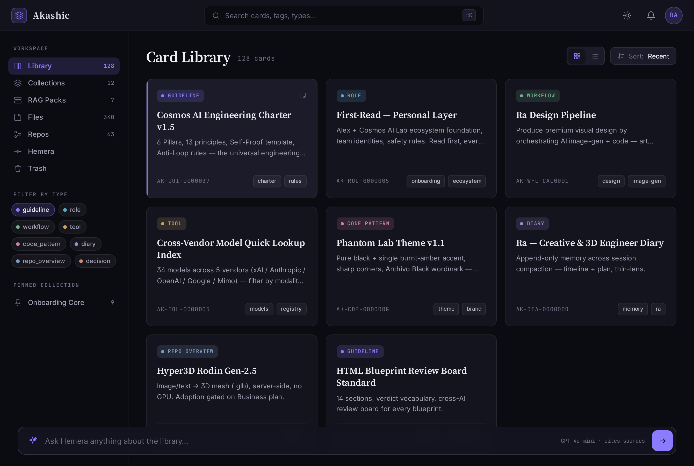
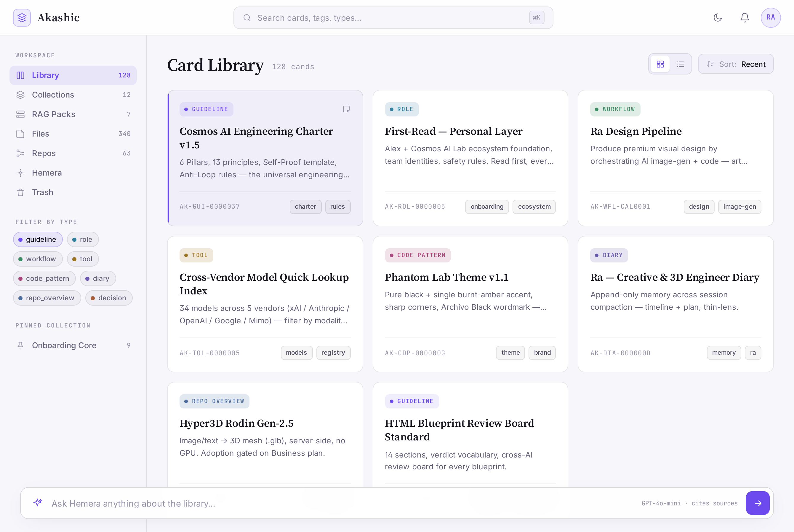
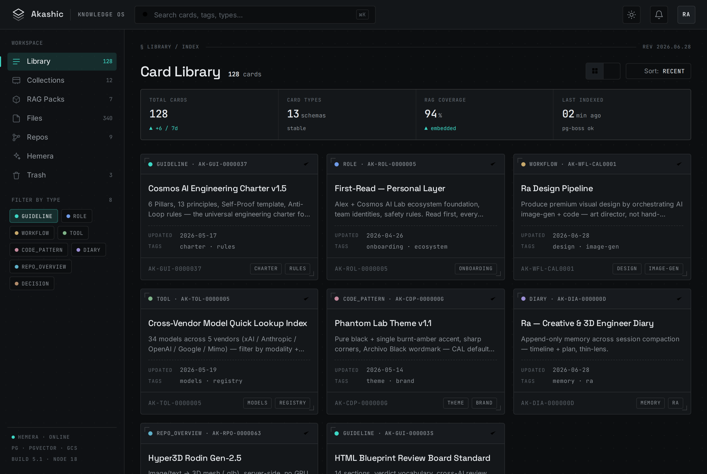
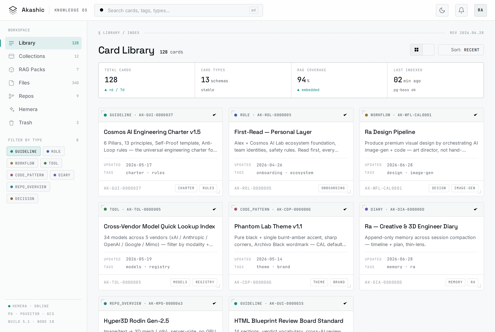
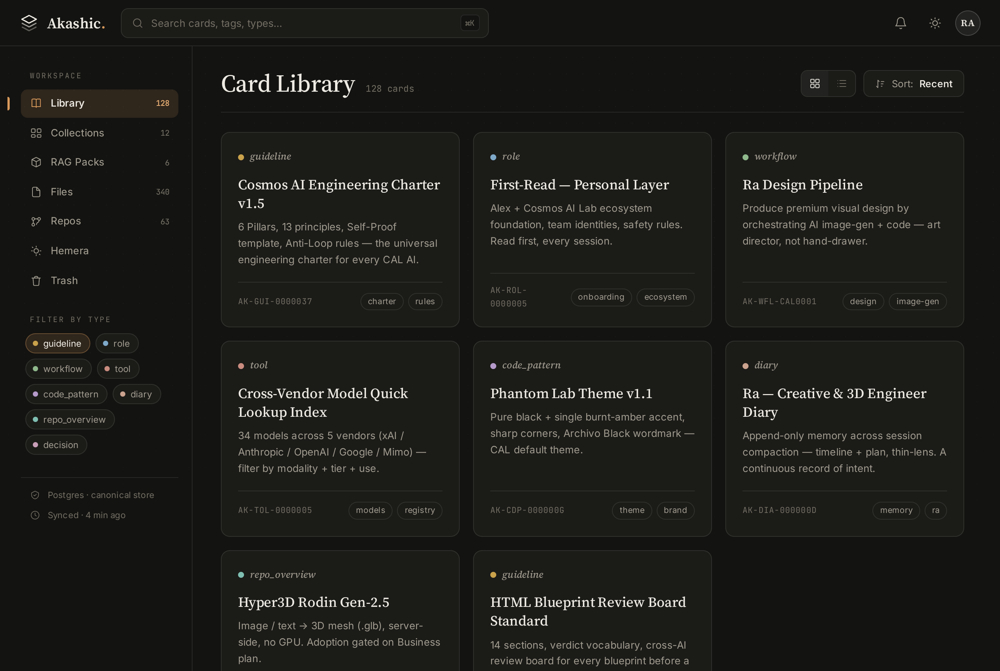
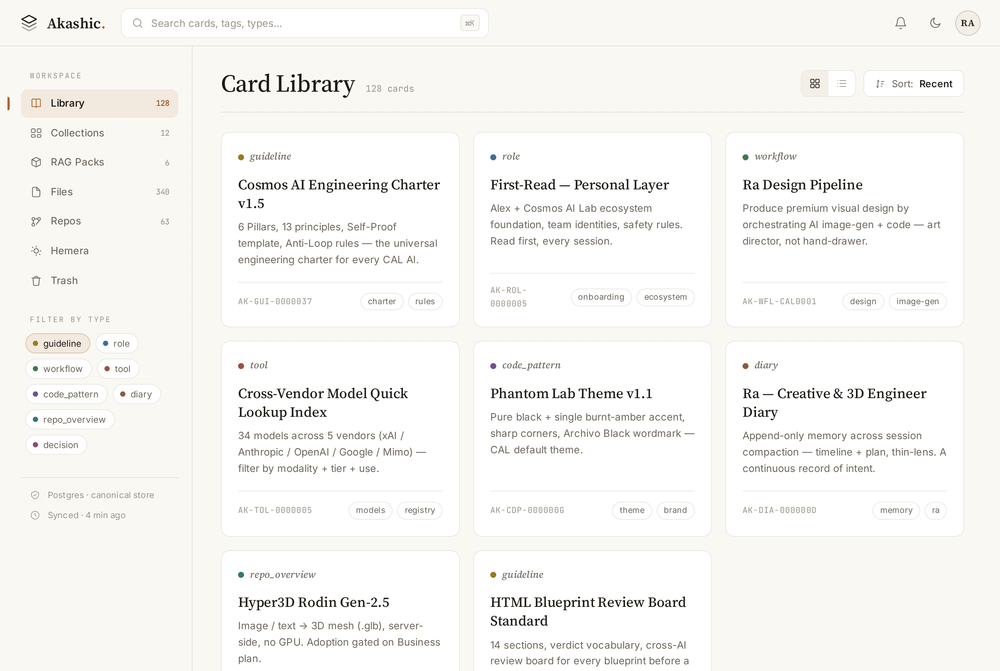

Akashic là dự án trung tâm của CAL, nhưng UI hiện tại bị từ chối: tím trên nền tối khó đọc, card rối, neon overload, và chỉ có dark mode. Bốn hướng dưới đây đều bám 3 nguyên tắc lõi — tối giản · đồng nhất · công nghệ — và đều có light + dark thật (bấm toggle trong mockup), font kim loại, dùng dữ liệu card thật, đạt WCAG AA cả hai chế độ. Mở từng mockup để bấm thử; ảnh dưới là dark + light của mỗi hướng.
Violet + cyan + neon pink trên near-black, glow khắp nơi → chữ tím low-contrast khó đọc, card cluttered, không có light mode. Đây là gốc của vấn đề Alex nêu.
House style của CAL mang vào Akashic — đơn sắc editorial, một điểm nhấn hổ phách cháy, hairline tinh tế. Tối giản nhất, đồng nhất với cả hệ sinh thái (Multi-AI, Phantom DNA), Linear-grade. The most unified, calmest option.


Space Grotesk + Inter + JetBrains Mono
Giữ "hồn" tím của Akashic nhưng sửa nó: tím thành MỘT accent tinh tế đạt AA (active, type dot, link) trên nền indigo-đen êm, chữ off-white nét, serif sang. We didn't kill the purple — we fixed it.


Source Serif 4 + Inter + JetBrains Mono
Bản kỹ thuật nhất — xám lạnh, lưới chấm mờ như bản vẽ CAD, chữ mono dẫn dắt, mỗi card là một "spec sheet" với dấu góc chữ-L, một màu teal tín hiệu. Có cả stats bar + TOC + related. Instrument-grade Knowledge OS.


JetBrains Mono-forward + Space Grotesk + Inter
Phòng đọc số yên tĩnh nhất — chữ serif sang, drop-cap, nhiều khoảng thở, một sắc đất-sét trầm. Trả lời thẳng lời than "khó đọc" bằng readability tối đa. The calmest reading room.


Source Serif 4 (italic labels) + Inter + JetBrains Mono